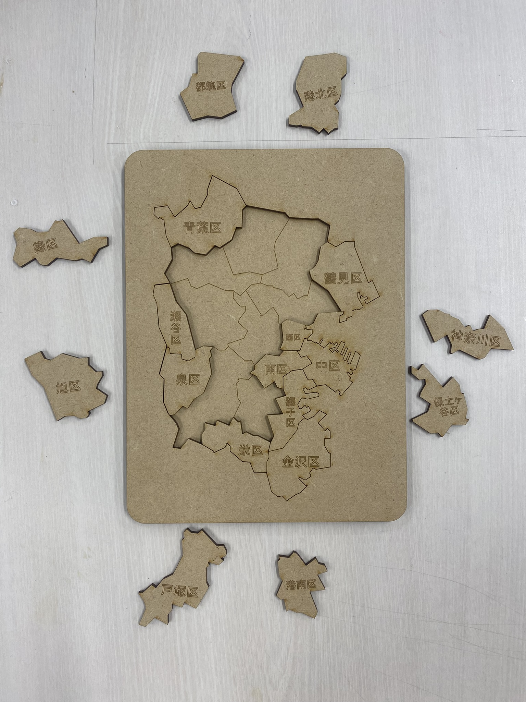
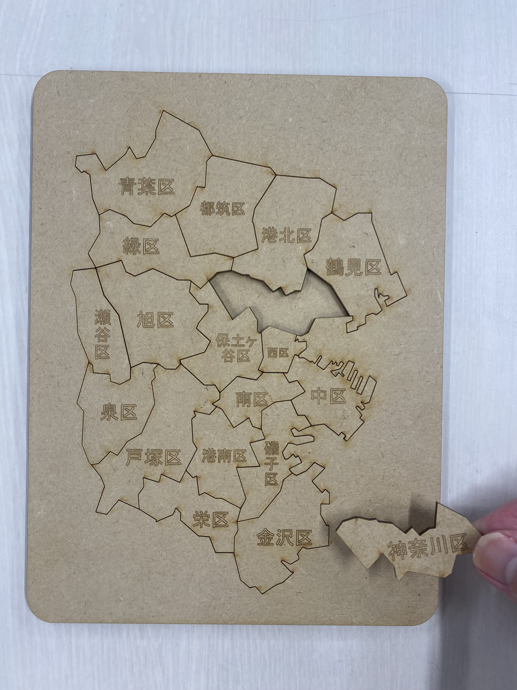

製作意図
「心を動かすもの」と聞いて、私が思いついたのは「地図」でした。
というわけで、横浜市にある全18区のパズルを制作しました。
みなさんはどこに何区があるかご存知でしょうか？
このパズルで横浜の地理について少し知ってもらえたら嬉しいです。
完成品


作品説明
Fusionで横浜市の画像を下地に人力で線を引きました。
MDFを2枚に分けて用意し、片方には区の名前がプリントされているパズルを。
もう一方には区の枠線だけがプリントされた土台を作りました。
1枚目のパズルを慎重にバラバラにして、残った部分を2枚目の土台に合わせてボンドでくっつければ完成です。
感想
想像以上にきれいに、細部までプリントされていて驚きました。
MDF以外の素材にもレーザーカッターしてみたくなりました。
DFXファイル
横浜市パズル